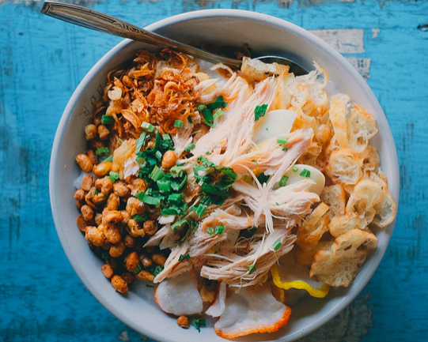

Bubur ayam is the Indonesian version of chicken congee, a thick rice porridge topped with shredded chicken and various savory condiments. This breakfast staple probably originates from the Chinese rice porridge, but it employs regionally available Ingredients and toppings to create an authentic Indonesian dish.
Meal prep time : 1 hour 15 minutes
Servings : 1